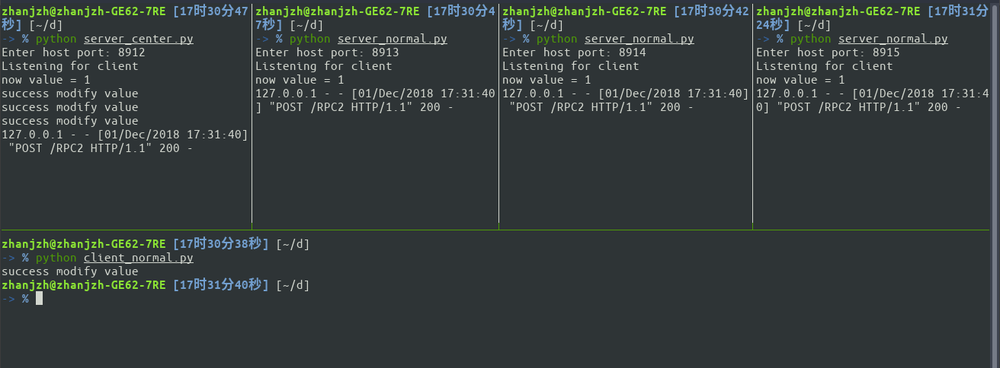

Linux下终端分屏 Posted on 2018-12-03 | Edited on 2018-12-25 | Views: @author zhanjzh Linux下终端分屏效果效果如下：  工具tmux 安装: 1sudo apt install tmux 运行： 1tmux 常用命令： 命令 快捷键 复制 c + b , 用光标选取要复制的内容 粘贴 c + b+ ] 竖直分屏 c + b “ 水平分屏 c + b % 配置让鼠标能够调节窗口大小以及选择终端： 新建配置文件 ~/.tmux.conf 如下： 123456789101112131415# Enable mouse mode (tmux 2.1 and above)set -g mouse on# Enable oh my zsh in tmuxset -g default-command /bin/zsh# Mouse based copybind-key -T copy-mode-vi MouseDragEnd1Pane send -X copy-pipe-and-cancel "reattach-to-user-namespace pbcopy"bind-key -T copy-mode MouseDragEnd1Pane send -X copy-pipe-and-cancel "reattach-to-user-namespace pbcopy" # 新建分屏保留原来路径bind '"' split-window -c "#{pane_current_path}"bind % split-window -h -c "#{pane_current_path}"bind c new-window -c "#{pane_current_path}"~